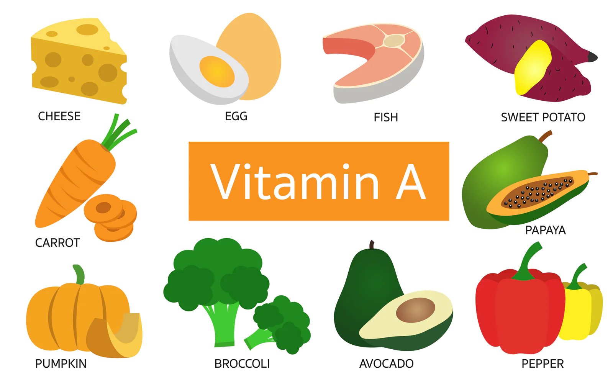
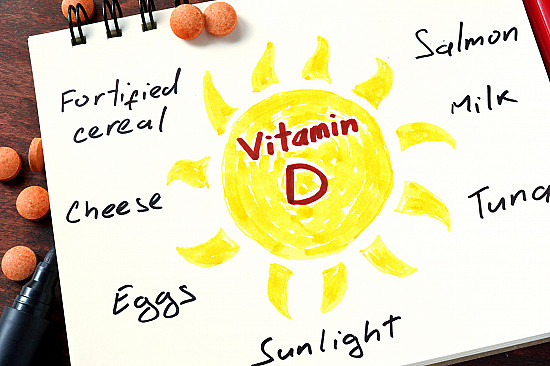

Vitamin A
Vitamin A is a fat-soluble vitamin that is crucial for maintaining healthy skin, vision, and the immune system. It can be obtained from both animal sources (retinol) and plant sources (beta-carotene).
Vitamin C
Vitamin C, also known as ascorbic acid, is a water-soluble vitamin with powerful antioxidant properties. It is essential for collagen synthesis, wound healing, and boosting the immune system.

Vitamin D
Vitamin D is unique as it can be synthesized by the body when the skin is exposed to sunlight. It plays a crucial role in calcium absorption, promoting bone health, and supporting the immune system.
